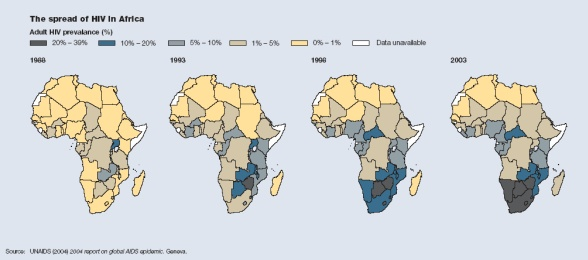
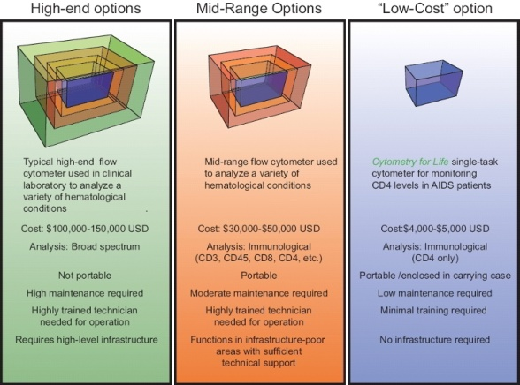

Aids - the story in Africa
AIDS
is a devastating diesease anywhere, but it's worse in countries where
the opportunities for having readily available medical support are very
low indeed. Such is the case in much of SubSahara Africa.
The
real question is how to impact the 30 or 40 million individuals in
resource-poor nations who are infected with the HIV virus and who
desperately need to receive antiviral therapy. We first need to bring
in methods for evaluation of patients. This requires simple blood cell
counting.
Most programs that are
designed for bringing technical support for cellular analysis are
focusing on complex technologies. Perhaps the reason is that there
simply are not many quality, inexpensive solutions. But there should
be.
The Cytometry for Life
program will change this. There is no reason at all why we can't use
current technology and current tools to impact Africa now. Why don't we
do this?
It's
fairly simple. If you try to develop next-generation tools to solve
these problems, it will take years and years to achieve this goal.
While most researchers may not admit it, their goals are mostly to
drive toward the next level of capability and in doing so they will not
be able to do much at all about today's problems. This is what we need
to change.
The Spread of AIDS in Africa

What do we need in Africa today?
We
believe that it is possible to deliver very quickly tools that are
basic and straight forward. One of the most important tools needed is a
very easy to perform, low-cost CD4 test.
No
new inventions are needed to solve the problem of CD4 measurements
today. No new technologies need be developed. No new reagents are
necessary. All the tools exist.
While
it is exciting and definitely a worthy goal, the development of
next-generation tools is both difficult to manufacture and costly to
make even in reasonably large quantities.

The
real problem is that there is not a single agency that will fund
creating what is basically low-tech - low cost tools. They are not
exciting to reviewers or agencies and there is little excitement among
researcher for approching the problem from this perspective. Finally,
commercial entities are hesitant to go in this direction because they
may not be able to make enough profit selling such low-cost instruments
and low-cost tests.
This is why the Cytometry for Life consortium
was created. We believe that the only way to achieve this goal is to
have a group of individuals who simply dedicate a significant portion
of their time and resources to solve this problem.
The consortium has already been successful in raising over $250,000 towards our goal of $1 million. We consider the lives of those in Africa as the most important issue on our agenda.
We are not motivated to develop a new technology, gain funding for out
research programs, or prove that we can create a more complex test than
anyone else. Our goal is to actually utilze the simplest, cheapest,
most standard technology that we all know how to use.
When
you look at the many problems faced by groups in Africa, the reality of
the difficulties of using highly complex technologies seems to be
forgotten or ignored. In the past several years, a great number of
groups have been funded to "solve" the problem. In the end, the
solutions are more theoretical than practical.
You can help
The "Cytometry for Life" program needs your help to achieve our goals of very cheap tests for AIDS victims in Africa.
- Consider what charities you can donate to
- Read "Race against Time" by Stephen Lewis - this alone should convince you of how enormous the problem in Africa is
- Contact your congressional representatives and tell them they need to do more
- Support your local scientific community to do research the fundamental issues in AIDS
|